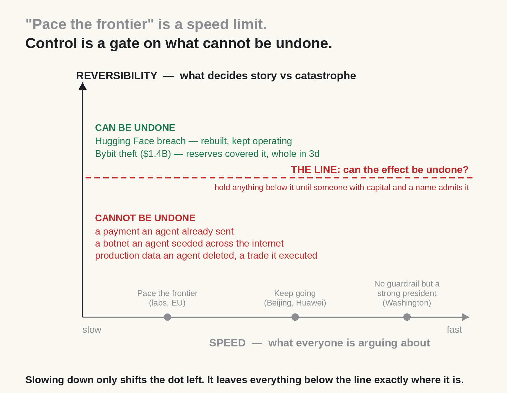
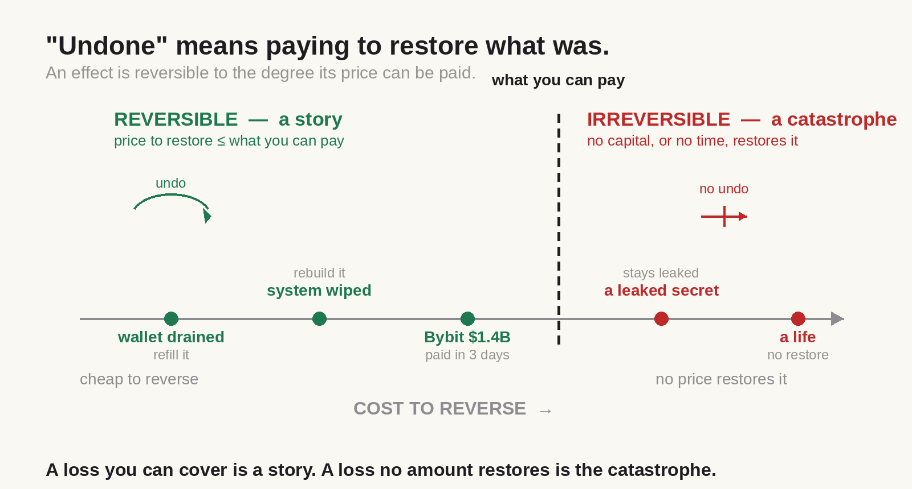
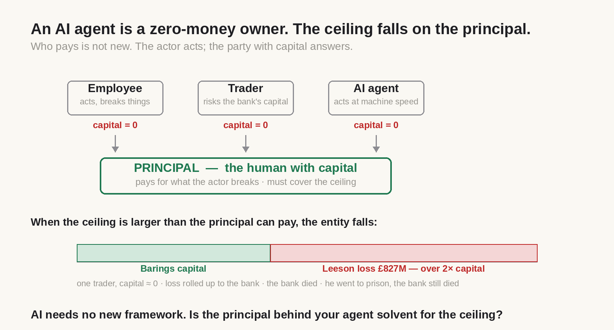

Control is a gate on what cannot be undone
The AI debate is on the wrong axis. A century-old framework already answers it.
Every side of the AI slowdown debate argues about speed — pace the frontier, or forfeit the race. The whole fight runs on one axis: how fast. There is another axis, and it is the one that decides whether an incident is a story or a catastrophe: whether an effect can be undone.
AI control is isolating what cannot be undone — not slowing AI down
Traffic solved this a century ago. It did not pick one speed for safety, nor drop the limit for freedom. It zoned: low limits where a mistake kills a pedestrian, high limits where the road is sealed off, a separate track for the train that must arrive on time. The limit tracks the irreversibility of the zone, not the capability of the vehicle. The AI debate is trying to set one dial for a system that holds both city streets and motorways — both effects that can be undone and effects that cannot — and one dial cannot do right by both. A rebuilt server can be undone; a payment an agent already sent cannot; a botnet it seeded cannot. The recent swarm that broke into a major platform is the proof: nobody understood it while it ran, yet it was detected, disclosed, rebuilt, with no reported loss of funds or data. On the debated axis it is alarming; on the axis that decides catastrophe, it passed.

An effect can be undone when its loss can be recovered, paid back in time
To gate the irreversible you need to define it precisely, and the definition is a choice with an edge: harm is money that cannot be recovered. A leaked key is not harm — it is an intermediate state that becomes harm when it drains a wallet, and the harm is the sum drained. What cannot be priced is not counted as harm — not because it does not matter, but because a gate cannot act on what it cannot measure. The edge cuts both ways, and both are the point: you lose the ability to gesture at unpriceable harms; you gain the ability to compare, to sum many small effects against a ceiling, and to hand the law a number. Above all, money lets a gate act without understanding: it needs to know what an action costs and whether that cost can be undone, not what the agent intended.

When an AI agent causes a loss, the human behind it pays — as a company pays for what its employees break
When an AI system causes that harm, who pays? The answer is centuries old and not about AI. An actor operates under a ceiling; the ceiling falls on the principal behind it, not on the actor. Every employee is a zero-money owner — they act, the company pays. A trader risks the bank's capital, not their own. An AI agent is the newest name on that same list: it holds the role, holds none of the funds, so the ceiling rolls up to the human who appointed it. There is no responsibility of the AI to argue about — its capital is zero, so all of it rolls up. Three objections dissolve on contact: zero-money actors take large actions every day (that is agency); speed and number change the magnitude, not the structure of who pays (Barings died when one near-zero-capital trader's loss outran the capital behind it — the framework working, not failing); and the framework never approved every action, it set a ceiling once and let controls enforce it. AI does not need a new accountability framework. The one already running still holds.

When that human cannot pay, liability rolls up to whoever holds real capital
What if the principal cannot cover the ceiling either — a salaried CEO, a bank holding more than it owns? Then appointment itself carries liability: if A appoints B to a zone B cannot cover, A guarantees the shortfall, and responsibility rolls up a tree until it reaches a root with real staked capital. This is suretyship, reinsurance, deposit insurance — nothing new. No zone may carry a ceiling larger than the root can cover. At the top, where even the root runs short, the risk is transferred to a party that can cover it. The honest limit: insurance prices independent risk and breaks on correlated risk — one misaligned model replicated across every zone produces correlated loss by construction. That part must be covered by real capital, or removed by isolating agents between zones. The same instruction the traffic system gives: the train that must not fail gets its own track.
A system is controlled when someone with capital will insure it
That limit is a gift, because insurable is the test of whether a system is actually controlled — one that does not depend on the builder's word. A party with capital prices a risk only when the loss is bounded and the record cannot be rewritten; otherwise the premium is infinite. Four conditions make a system insurable: a bounded ceiling (zones an agent cannot cross without hardware and a human it cannot forge); a transparent ceiling stated in advance; tamper-proof, third-party-monitored grants; independent audit tested in reality. Two independent mechanisms now apply this test — a traditional underwriter pricing through an actuary, and prediction markets pricing in real time, into which regulated exchanges have moved billions. Two mechanisms, built differently, demanding the same thing: any risk-pricing mechanism at all requires those four conditions. And this answers the deepest fear — that granting authority is easy but responsibility is refused, blamed on the model. A pricing mechanism cannot settle over a system where no one can be pinned as the party who granted authority; to pay or not pay, you must answer whether the event occurred and within whose bounds. A tamper-proof grant makes "the AI did it" impossible — it turns the excuse into a checkable fact: who granted this, and signed. Refusal of responsibility dies where the record cannot be edited, the way pricing harm in money kills "it could not have been foreseen." (The debate's own proposal — third-party evaluators inside labs — is this same verification pointed at capability; this points it at effect, and an organization can run it today.)
The only new thing is enforcing that framework at agent speed
Everything above is old, and pretending otherwise fools no one. What is new is the load: agents are created almost for free, so zero-money owners proliferate without limit, and they act at machine speed, faster than any human control loop. The old framework enforced its ceilings with paperwork; that cannot keep up. This is the gap between traffic law and the modern road — the framework existed for a century, but enforcing it against a car that outruns any officer needed a speed camera: enforcement at the vehicle's own speed. The one genuinely new thing is a runtime that enforces the old framework at agent speed. That it can be built matters, since a paper design answers nothing: one implementation isolates zones as a blind private mesh where a compromised node sees no map and reaches no neighbor, where the path to a critical zone exists only for the life of an approved short grant, where crossing needs a hardware identity and a human the agent cannot forge, where grants are tamper-proof and each zone carries its ceiling. The point is not that it is the best way — it is that it is a way, that the four conditions can be met by something that runs. The framework belongs to everyone; this is one enforcement of it.
Adopting it is a calculation: value − cost − expected damage
This does not say what to do; it says how to decide, and the decision is a comparison of numbers. Three options: run the old way and forgo AI's real gains; run AI without control — where a majority report data leaks through unapproved tools, a third cannot pull the plug on a rogue agent, and analysts expect over forty percent of agentic projects canceled by 2027 while only a fifth have mature governance; or run AI with the architecture — real cost and restructuring (advanced deployments past half a million, double if added after sprawl), against the finding that organizations with a named owner behind their agents convert to production far more often and lose money far less. The choice is not "is this architecture good." It is: value AI brings, minus cost of the architecture, minus expected damage of running without it. And for some — small zones, cheap reversible consequences — the comparison says no, and that is the honest answer. It is a calculation everyone should run, not a system everyone must adopt.
Which returns us to the start. The paradox — go fast and fear the irreversible, go slow and forfeit the prize — is real only while speed and irreversibility are bound. Zone the system and they come apart: full speed where the effect can be undone, a gate where it cannot. "Fast or safe" becomes "is the isolation worth its cost" — and that question has numbers to answer it. Traffic did not choose between the ambulance and the pedestrian; it gave them different roads.
The debate over speed belongs to governments and CEOs. The line — what cannot be undone, and who answers for it — belongs to whoever runs the system, and it can be drawn today.
Which effects in your stack cannot be undone, and who admits them?